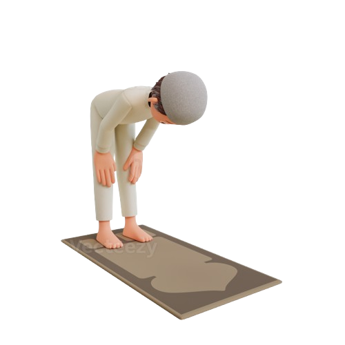

Rukuk
سُبْحَانَ رَبِّيَ الْعَظِيمِ وَبِحَمْدِهِ
"Subhaana rabbiyal ‘azhiimi wa bihamdih."
Artinya: "Maha Suci Tuhanku Yang Maha Agung dan segala puji bagi-Nya."
سُبْحَانَ رَبِّيَ الْعَظِيمِ وَبِحَمْدِهِ
"Subhaana rabbiyal ‘azhiimi wa bihamdih."
Artinya: "Maha Suci Tuhanku Yang Maha Agung dan segala puji bagi-Nya."